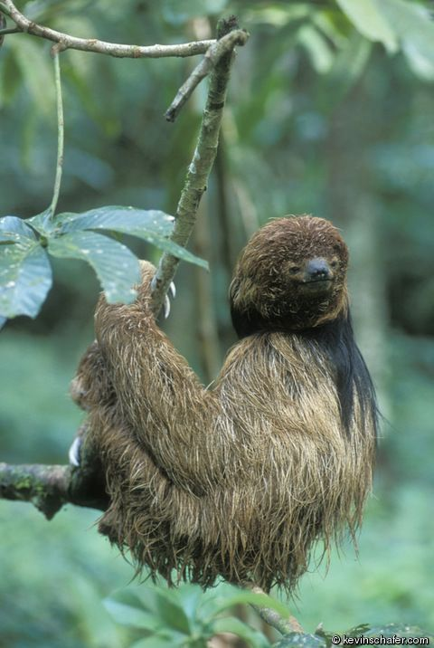

Sloth Diversity
| Name of Species | Scientific Name | Number of Fingers | Habitat Location | Conservation Status | Picture |
|---|---|---|---|---|---|
| Maned Sloth | Bradypus Torquatus | Three-toed | Brazil | Vulnerable |  |
| Pygmy Sloth | Bradypus Pygmaeus | Three-toed | Isla Escudo de Veraguas, Panama | Critically Endangered |  |
| Pale-throated Sloth | Bradypus Tridactylus | Three-toed | Northern South America | Least Concern |  |
| Brown-throated Sloth | Bradypus Variegatus | Three-toed | Central and South America | Least Concern |  |
| Linnaeus's Sloth | Choloepus Didactylus | Two-toed | South America | Least Concern |  |
| Hoffmann's Sloth | Choloepus Hoffmanni | Two-toed | Central and South America | Least Concern |  |